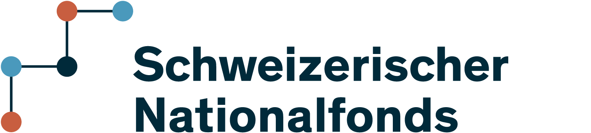

MNE-RT is an open-source Python library for real-time M/EEG signal processing and analysis, built on MNE-Python and MNE-LSL. It covers the full real-time pipeline — from amplifier to 3-D brain display, in a single, researcher-friendly API designed for neurofeedback, BCI, and clinical or basic-science monitoring applications.
Key capabilities#
✔ |
Multiple real-time feature modalities — sensor power, ERD/ERS, Hjorth parameters, spectral centroid and peak, band ratio, cross-frequency coupling (CFC), connectivity, instantaneous phase (Hilbert analytic signal), graph-theory metrics, and more. See Real-time Feature Modalities for the full list. |
✔ |
Sensor and source-space processing using MNE inverse operators (eLORETA, MNE, dSPM). Compute and stream cortical-source activity. |
✔ |
Live artifact correction —
|
✔ |
Real-time quality control — |
✔ |
Adaptive feedback protocols — |
✔ |
Feature combiners — blend N parallel feature values into a single feedback score.
|
✔ |
Nine real-time visualisation windows — a scrolling NF
|
✔ |
Dual feedback output — broadcast values via OSC (Max/MSP,
SuperCollider, TouchDesigner) with |
✔ |
CLI — launch full real-time M/EEG sessions with a single
|
✔ |
Real-time decoding — |
Quick install#
pip install mne-rt # core (MNE, LSL, OSC included)
pip install "mne-rt[full]" # + 3-D viz, dev tools, docs
# Install uv once
curl -LsSf https://astral.sh/uv/install.sh | sh
uv pip install mne-rt
uv pip install "mne-rt[full]" # + 3-D viz, dev tools, docs
# Editable install from source
git clone https://github.com/payamsash/mne-rt.git
cd mne-rt && uv pip install -e ".[dev]"
mamba install -c conda-forge mne-rt
See Installation for full instructions.
Quick start#
from mne_rt import RTStream
nf = RTStream(
"sub01",
session="01",
subjects_dir="/data/subjects",
montage="easycap-M1",
)
nf.connect_to_lsl(mock_lsl=True) # or connect to a real amplifier
nf.record_main(
duration=300,
modality=["sensor_power", "erd_ers"],
show_nf_signal=True,
)
Pipeline overview#
| Stage | Class / Function | Notes |
|---|---|---|
| ① Acquisition | RTStream.connect_to_lsl() |
Hardware amplifier or mock replay via mne-lsl StreamInlet |
| ② Baseline | RTStream.record_baseline() |
Bad-channel detection · ICA · noise covariance (the head model is built on first use) |
| ③ Quality control | BadChannelDetector · RiemannianPotatoDetector |
Flags flat / noisy channels and artifactual covariance windows every epoch |
| ④ Artifact correction | ORICA · AdaptiveLMS · GEDAIDenoiser · ASRDenoiser · RTMaxwellFilter |
One or more methods selected per session; all operate sample-by-sample |
| ⑤ Feature extraction | record_main(modality=[…]) |
20 feature modalities in sensor or source space; parallel thread-pool per window |
| ⑥ Feedback protocol | ThresholdProtocol · ZScoreProtocol · PercentileProtocol · LinearTrendProtocol · ShamProtocol · UpDownStaircaseProtocol · MultiBandProtocol · RLProtocol · OperantProtocol · TransferProtocol |
Maps feature value → output signal; all are stateful and adaptive |
| ⑦ Visualisation | NFPlot · RawPlot · EpochPlot · TopomapPlot · BrainPlot · TopoPlot · ButterflyPlot · CompareEvoked · TFRPlot |
Scrolling signal · epoch overlays · scalp topo · 3-D brain · scalp-layout ERP · butterfly overlay · per-channel comparison · TFR heatmaps |
| ⑧ Feedback output | OSCSender · LSLSender |
UDP/OSC to Max·MSP, SuperCollider, PD · LSL for PsychoPy, OpenViBE, BCI2000 |
Cite#
If you use MNE-RT, please cite [1].
Shabestari, P. S., Ribes, D., Défayes, L., Cai, D., Groves, E.,
Behjat, H. H., … & Neff, P. (2025). Advances on Real Time M/EEG
Neural Feature Extraction. IEEE CBMS 2025.
@inproceedings{shabestari2025advances,
title = {Advances on Real Time M/EEG Neural Feature Extraction},
author = {Shabestari, Payam S and others},
booktitle = {2025 IEEE 38th CBMS},
pages = {337--338},
year = {2025},
organization = {IEEE}
}
{kind=link}

Development was supported by the Swiss National Science Foundation (grant number — 208164).